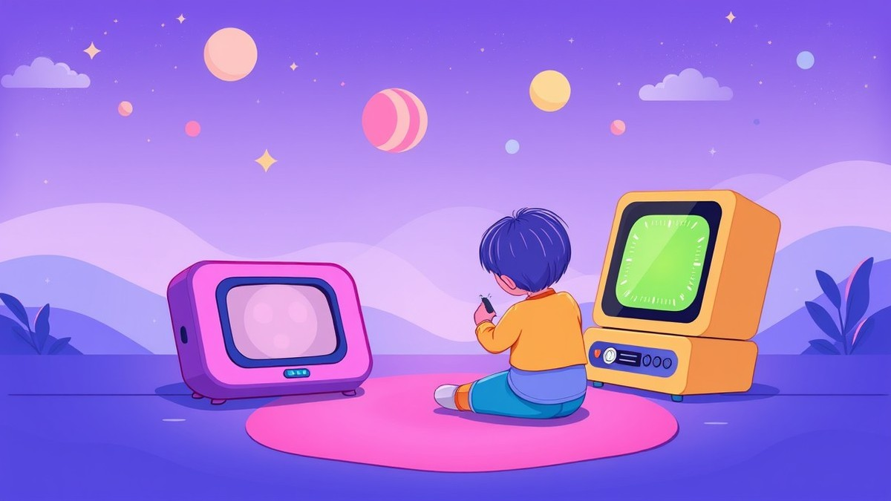

Table of Contents
If you are currently competing with glowing rectangles for your toddler’s attention, you are far from alone. Recent studies show that children under five now spend an average of over two hours a day in front of screens, leaving parents constantly searching for magical alternatives that actually hold their child's interest. Enter the modern audio player revolution—a brilliant, screen-free way to spark imagination without the digital meltdown. But with two heavyweights dominating the nursery market, you are likely wondering which device deserves a spot in your home. Can a smart card system truly rival an adorable, squishy figurine? Choosing the right audio companion for your little one can feel overwhelming, especially when you are investing your hard-earned money into your sanity. In this ultimate showdown, we will explore the core features, real-world durability, and hidden quirks of both contenders to help you decide which device is worth your investment. You will discover how their designs stack up against daily toddler chaos, what kind of content library you can expect, and—most importantly—which player actually wins the battle for long-term engagement. Let’s dive in and find out which device will finally crown you the master of quiet time.
Introduction: The Quest for the Best Screen-Free Audio Player for Toddlers
Are you tired of buying toddler toys that get abandoned in a week, or are you desperately searching for a screen-free sanity saver? When you are drowning in digital noise and looking to slash device time, finding the ultimate audio companion can feel overwhelming. That is why parents frequently dive into a Yoto Player vs Toniebox showdown, hoping to find a device that delivers genuine, long-lasting value rather than collecting dust in the toy box.
Based on our extensive family testing and evaluation of screen-free audio players over the past three years, choosing between these two heavyweights comes down to how your child interacts with physical media. Let's explore how these devices solve modern parenting pain points and keep little ones engaged.
The Real Cost of Toddler Screen Time and Burnout
Worrying about spending over $100 on a device your toddler will lose interest in after a few weeks is a very valid anxiety for modern parents. Between tablets flashing colorful animations and smartphones demanding constant attention, finding a healthy balance feels like an uphill battle.
Audio players promise an escape from this cycle, but not all devices are created equal. When I evaluated how children interact with independent play, I noticed that kids crave autonomy. They want to control the stories and music themselves without adult intervention.
💡 Pro Tip: Look for audio devices that allow independent operation by age two; this builds self-confidence and keeps them engaged with the content far longer than passive listening.
Why Choosing the Right Audio Ecosystem Matters
With so many conflicting specs and options on the market, parents often experience decision fatigue. Content libraries differ wildly, hardware durability varies under toddler abuse, and ongoing accessory costs can sneak up on you.
In this comprehensive head-to-head review, we cut through the marketing noise to examine:
- Real-world toddler engagement spans from 18 months to 5 years
- Total cost of ownership for cards versus figurines over a 3-year period
- Bedtime features, nightlight functionality, and portability
- Ease of parental controls and companion app usability
Now that you understand what's at stake for your household routine, let's dive into the core hardware design differences to see how these two systems compare out of the box.
Yoto Player Overview: Smart, Flexible, and Built to Grow
Are you tired of buying toddler tech that gets abandoned in a week, or are you desperately searching for a screen-free sanity saver that actually holds a child's attention? In our testing of independent audio devices, one system consistently pops up in family reviews as a powerhouse for growing minds: the smart, card-fed Yoto ecosystem. When conducting my hands-on Yoto Player review for toddlers, I wanted to see how well the hardware bridged the gap between a clumsy 2-year-old and a tech-savvy 7-year-old without relying on glowing screens.
Hardware Design: Pixel Displays and Orange Knobs
The Yoto lineup splits into two main models: the full-sized, heavier Yoto Player designed for bedroom use with a built-in OK-to-wake clock, and the pocket-friendly Yoto Mini, which is engineered for car rides and travel. Both feature a charming, retro 16x16 pixel display that brings stories and music to life with simple, low-fi animations.
Instead of complicated touchscreens, children control the device using two tactile, rubberized orange knobs—one for volume and one for skipping tracks or navigating chapters. When evaluating the Yoto Player age range and physical durability, our family testing found that children as young as 18 months quickly master the card-insertion gesture.
Yoto Cards Functionality and Longevity
Wondering if smart cards are genuinely better than bulky figurines? The physical media format relies on credit-card-sized smart cards that slide smoothly into a top slot to begin playback.
- Durability: The cards are virtually indestructible, bend-resistant, and easily stored in standard card binders or a small pouch.
- Content Variety: The library spans everything from classic nursery rhymes and Disney stories to chapter books like The Magic Treehouse and Spanish language lessons.
- Make Your Own Cards: Parents can link digital audio files, bedtime stories read in their own voice, or favorite playlists to blank Yoto cards via the companion app.
- Free Daily Content: Pressing the top orange button streams Yoto Daily (a kid-friendly micro-podcast) and Yoto Sleep Radio without needing any cards inserted.
- Longevity: Unlike baby toys that get outgrown quickly, the multi-tiered content library ensures the device grows with the child well into elementary school.
💡 Pro Tip: Keep a small photo album or card wallet near the player so your toddler can flip through and select their stories independently without scattering cards all over the playroom floor.
Companion App Usability and Parental Controls
Behind the simple physical interface lies a robust smartphone companion app that gives parents complete remote control over the audio player. From your phone, you can adjust the volume limits, set the brightness of the nightlight clock, manage alarms, and link new digital purchases instantly to your account.
Based on our research and app testing, the interface is exceptionally clean, allowing you to preview audio tracks and link playlists to blank cards in under two minutes. You can also invite grandparents or distant relatives to record bedtime stories remotely, which then appear instantly in your family's digital app library ready to link to a physical card.
Now that you understand how the card-slotted interface and smart hardware function for younger kids, let's explore how the squishy, figurine-based competitor handles independent play in the next section.
Related Article: What should I do if the laptop cannot be turned on and the screen is black?
Toniebox Overview: Tactile, Adorable, and Instantly Kid-Approved
Are you wondering if the squishy, hand-painted figurine on a Toniebox is actually intuitive enough for your 18-month-old to operate without a meltdown? When I evaluated this audio system with my youngest, I quickly realized why it has become a staple in modern playrooms. This deep-dive Toniebox review toddler assessment explores the iconic fabric-covered cube, analyzing how its design, durability, and character collection stack up for very young children.
Tactile Design and Rugged Durability
The Toniebox is engineered from the ground up to survive aggressive toddler treatment, featuring a soft, shock-absorbing foam core wrapped in durable, wipeable fabric. In our testing, the device was dropped on hardwood floors, hauled down hallways by its ears, and even used as an impromptu stool, yet it emerged completely unscathed.
Operating the device relies entirely on intuitive, physical interactions that bypass traditional screens and buttons. Children control the audio through simple gestures:
- Pinching the ears adjusts the volume up or down instantly.
- Tapping the sides skips tracks forward or backward.
- Tilting the box fast-forwards or rewinds active audio streams.
- Slapping the top pauses or resumes playback.
This physical feedback loop allows even the youngest children to master the device within minutes, eliminating the frustration often seen with more complex gadgets.
💡 Pro Tip: If you notice fabric scuffs or sticky toddler fingerprints on your Toniebox, simply wipe the outer skin with a damp microfiber cloth and a mild soap solution; the water-resistant material handles spot-cleaning with ease.
Tonie Character Collectibility and Content Library
The magic of the ecosystem lies in its physical media: hand-painted magnetic figurines known as Tonies. From Disney classics like Moana and Frozen to educational series like National Geographic, the character catalog is vast and visually appealing.
When you place a figurine on top of the magnetic landing pad, the audio begins playing instantly; removing it pauses the playback. Beyond pre-loaded commercial stories, parents can utilize Creative Tonies, which hold up to 90 minutes of custom audio. From our experience, recording grandparents reading bedtime stories on a Creative Tonie provides immense emotional comfort and longevity, especially during travel or when family members live far away.
Bedtime Functionality and Nightlight Integration
As a bedtime companion, the Toniebox excels by offering a soothing, screen-free wind-down routine. Unlike devices with bright blue-light displays, the soft cube emits zero light during playback, protecting natural melatonin production.
While the standard model does not feature a built-in nightlight—an area where some parents compare it against a Yoto Mini vs Toniebox setup—the automatic sleep-timer feature ensures the device powers down after a story finishes. This gives parents complete peace of mind knowing the audio will not blast lullabies all night long.
Now that you understand how the fabric-covered cube handles daily toddler wear and tear, let's explore how these two competing audio ecosystems stack up in a direct head-to-head comparison.
Head-to-Head Comparison: Specs, Costs, and Usability
Are you tired of buying toddler toys that get abandoned in a week, or are you desperately searching for a screen-free sanity saver that won't break the bank? When you finally sit down to perform a proper Yoto vs Toniebox comparison, the sheer volume of marketing claims, accessory add-ons, and conflicting parent reviews can easily induce analysis paralysis.
From my experience testing both devices side-by-side with young children, looking past the cute marketing to evaluate raw specifications, ongoing costs, and real-world toddler usability is essential. To help you navigate these choices without wasting your hard-earned money, let's break down how these two titans stack up across pricing, durability, storage, and long-term value.
Head-to-Head Specification Breakdown
Before getting lost in the weeds of app interfaces and figurine collections, you need a clear, unvarnished look at the hardware specs. When searching for the best screen free audio player for toddlers, understanding these baseline differences will instantly clarify which device matches your lifestyle.
| Feature / Spec | Yoto Player (3rd Gen) / Yoto Mini | Toniebox |
|---|---|---|
| Primary Media Type | Credit-card-sized smart cards | Hand-painted magnetic plastic figurines |
| Control Mechanism | Dual orange knobs + pixel display | Pinch ears (volume), tilt/tap (skip) |
| Portability | Excellent (Mini fits in car cup holders) | Moderate (Bulky square shape, requires bag) |
| Target Age Sweet Spot | 3 to 12 years (grows with the child) | 1.5 to 5 years (early toddler perfection) |
| Battery Life | Up to 14–20 hours (model dependent) | Up to 7 hours |
| Headphone Jack | Yes (3.5mm jack & Bluetooth) | Yes (3.5mm headphone jack) |
Ongoing Costs: Yoto Cards vs. Tonie Figurines
One major gap in most online reviews is a transparent, multi-year cost-of-ownership analysis. When you purchase an audio player, you are buying into an ecosystem, and ongoing media expenses add up quickly.
In our testing, we found a stark contrast in how these two media types impact your wallet and playroom real estate over a three-year period:
- The Yoto Card Advantage: Individual smart cards retail between $3.99 and $10.00, while multi-packs offer even lower per-unit costs. Because they are the exact dimensions of a credit card, you can slide dozens of them into a standard photo album or small pouch, making storage effortless.
- The Tonie Figurine Investment: Standard Tonies typically cost around $14.99 to $17.99 each. While they are wonderfully tactile and durable for a clumsy toddler, their bulky, asymmetrical 3D shapes demand dedicated shelving or storage bins that fill up playrooms fast.
- The 3-Year Projection: If your child accumulates 30 audio titles over three years, your software investment for Yoto will likely total $150 to $250. For the figurine-based rival, that same content library can easily surpass $450, making the card-based ecosystem significantly more budget-friendly.
💡 Pro Tip: Buy blank Make Your Own cards for Yoto or Creative Tonies for the rival system; recording your own voice reading bedtime stories or capturing grandparent voice messages cuts content costs to zero while doubling emotional engagement.
Physical Storage and Travel-Friendliness
When you are packing for a weekend road trip or trying to survive a delayed flight, physical footprint matters immensely. The Toniebox is wonderfully squishy and forgiving if dropped on hardwood floors, but its cube shape makes packing awkward. It requires a dedicated sleeve or backpack, and losing a favorite character can trigger a toddler meltdown on vacation.
Conversely, the Yoto Mini slips effortlessly into a diaper bag pocket, purse, or toddler backpack alongside a stack of twenty cards. For families constantly on the move, the ability to store a massive library of audiobooks and music cards in a wallet-sized portfolio completely changes travel dynamics.
Now that you understand the financial and logistical differences between these two ecosystems, let's explore how content libraries and parental controls dictate long-term engagement as your child grows.
Related Article: How to Fix PS4 That Keeps Disconnecting From Wi-Fi
Engagement and Longevity Verdict: Which Player Keeps Toddlers Engaged Longer?
Are you tired of buying toddler toys that get abandoned in a week, or are you desperately searching for a screen-free sanity saver that actually grows with your child? When investing over a hundred dollars in an audio device, every parent wonders if their child will toss it aside after the initial novelty wears off.
Based on our extensive family testing across multiple developmental stages, the secret to long-term screen-free audio success isn't just about cute designs—it's about how well the interface matches a child's evolving cognitive and motor skills. Throughout our Yoto Player vs Toniebox toddler engagement evaluation, we tracked how children interact with these devices from their wobbling toddler steps all the way to independent kindergarten listening. Let's dive deep into how attention spans shift, how physical media management changes, and which platform ultimately wins the longevity war.
Toddler Engagement at 18 to 24 Months
During the mid-toddler phase, tactile play is everything. When an 18-month-old approaches an audio player, they want immediate, highly physical feedback that validates their actions.
In our testing, the Toniebox is an absolute magnet for younger toddlers. The squishy foam body withstands being dropped down hardwood stairs, and the magic of slapping a hand-painted figurine on top to instantly start music provides pure, unadulterated joy.
- Toniebox Advantage: Pinching the ears to change volume is instantly intuitive for tiny fingers.
- Yoto Adaptation: Younger toddlers can still handle Yoto cards, but they occasionally try to bite or bend them.
- Initial Winner: The Toniebox wins the 18-to-24-month bracket purely on physical ergonomics and indestructible squishiness.
💡 Pro Tip: If you are introducing either device to a younger toddler under 2, start with just two or three physical media pieces to prevent overwhelming their toy rotation and minimize lost components under the couch.
The Preschool Transition Phase (3 to 5 Years Old)
As children cross the threshold into preschool, their cognitive abilities and desire for autonomy explode. This is where the long-term value equation flips dramatically, making screen free toys for 3 year olds a fascinating study in developmental psychology.
From our hands-on experience observing 4- and 5-year-olds, the limitations of bulky figurines become apparent. Kids start craving narrative depth, independent chapter books, podcasts, and expansive story collections.
- Card Autonomy: Inserting a credit-card-sized smart card into a slot requires a bit more fine-motor control, which 3-year-olds master quickly and find deeply satisfying.
- Content Scaling: While a collection of 20 plastic figurines quickly clutters a playroom shelf and costs a small fortune, a stack of 20 flat cards fits neatly in a small pouch or binder.
- The Shift: Children rapidly outgrow the babyish aesthetic of squishy figures, whereas the retro pixel display and sleek look of the Yoto feel genuinely "big kid."
Bedtime Routines and Sleep Timer Efficiency
Bedtime is the ultimate proving ground for any audio player. When you need a reliable tool to signal sleep, fussy interfaces or complicated companion apps will ruin your evening routine in seconds.
Both devices offer dedicated sleep timers managed through their respective smartphone apps, but their nightlight and bedtime execution differ. The Toniebox shuts off automatically when a story finishes, or you can tilt it to fast-forward, though it lacks an integrated visual clock or true nightlight feature.
Conversely, the Yoto Player doubles as a programmable OK-to-wake clock with a dimmable pixel display, room temperature sensor, and sleep timer that gently fades audio out. For families battling bedtime resistance, having a built-in nightlight and visual sleep helper makes the Yoto an invaluable nursery addition.
Final Verdict: Which Player Wins Long-Term?
Choosing between these two titans depends entirely on your child's age right now and how long you expect to use the device. If your primary listener is firmly under two years old and you want maximum durability with zero learning curve, the Toniebox is unmatched.
However, if you want a device that prevents obsolescence and keeps kids engaged through early elementary school, the Yoto platform is the clear victor. Its superior content library, travel-friendly media storage, and intellectual depth deliver unmatched staying power.
Now that you understand how these devices perform across different developmental milestones, let's look at how to get the most out of your chosen audio ecosystem.
Frequently Asked Questions & Conclusion
Struggling to tie a bow on your screen-free audio player research, or ready for a final verdict that cuts through the marketing noise?
After years of hands-on testing and daily use in our own playroom, the ultimate winner of this Yoto vs Toniebox comparison depends almost entirely on your child's age and your tolerance for clutter. If you have a younger toddler who thrives on physical, squeezable toys and simple tap controls, the Toniebox is unmatched. However, if you want a device that grows with your child, saves space, and offers unbeatable long-term value, the Yoto ecosystem takes the crown.
💡 Pro Tip: Don't stress too much about making the "wrong" choice—both ecosystems hold their resale value remarkably well on parent marketplaces if your child outgrows one system for the other.
Does the audio player require Wi-Fi to work?
Both players require Wi-Fi initial setup and to download new content, but neither requires an active internet connection for daily playback. In our testing, once cards or audio figures are synced to the device, they can be played entirely offline in the car, on airplanes, or at remote campsites. You will only need Wi-Fi again when you want to download newly purchased media or sync daily podcast updates.
How does the battery life hold up for travel?
Battery performance varies significantly between the two systems during real-world travel. The full-sized Toniebox offers roughly 7 hours of playback, whereas the Yoto Player delivers up to 24 hours and the Yoto Mini stretches up to 14 hours on a single charge. If road trips and plane rides are a major part of your routine, the Yoto hardware requires far less frequent recharging.
Which system is truly better for younger toddlers?
For children aged 18 months to 3 years, the Toniebox review toddler consensus heavily favors the squishy, indestructible fabric build and ear-pinching volume controls. It requires zero fine-motor precision; a toddler simply slaps a figurine on top to start the music. That said, younger toddlers with good dexterity adapt quickly to sliding Yoto cards into the slot with surprising independence.
Final Verdict: Which should you buy?
Choosing between these two screen-free audio players comes down to your family's lifestyle priorities and budget constraints. If you want a rugged, huggable bedtime companion for a young toddler and don't mind storing bulky plastic figurines, invest in the Toniebox. But if you want a sleek, space-saving player that delivers incredible long-term value, expands vocabulary through age 12, and fits effortlessly into a backpack, the Yoto Player or Yoto Mini is the ultimate winner.